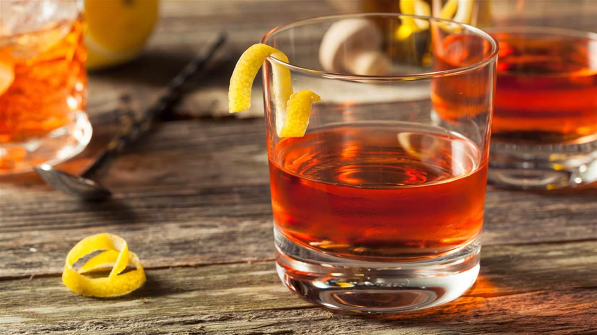

AZERAC
SAZERAC works to support the high-redshift / epoch of reionisation community through the organisation of annual virtual (northern hemisphere) summer meetings, regular specialist session sessions (SIPS), and the maintenance of a community mailing list. Virtually all of the talks were recorded and are available via our our YouTube channel.
To sign up for the SAZERAC mailing list or to contact us on another matter message hello@sazerac-conference.org.
Announcements
The First Stars
Our first SAZERAC sip (specialist session) will be The First Stars held on October 23 2020. Click here to find out more and apply for a contributed talks (deadline 23 September). Registration is not required but you should sign up for the SAZERAC mailing list to obtain regular updates and recieve Zoom/Slack links. The sip will also stream to (and be recorded on) on the SAZERAC YouTube channel.
History
SAZERAC (originally the Summer All Zoom Epoch of Reionisaton Astronomy Conference) was founded by Steve Finkelstein and Stephen Wilkins during the COVID-19 pandemic to mitigate the effect of the cancellation of in-person summer conferences, particuarly on early career researchers.
The first SAZERAC event (SAZERAC2020) was a 4 day long virtual conference held in July 2020. SAZERAC2020 recieved over 500 registrations from more than 30 countries with a peak audience of more than 350. All of the talks were recorded and are available via our website or YouTube channel.
Steering Committee
- Anson D'Aloisio, University of California, Riverside
- Marusa Bradac, University of California, Davis
- Romeel Dáve, University of Edinburgh
- Xiaohui Fan, University of Arizona
- Steve Finkelstein, University of Texas, Austin (co-chair)
- Charlotte Mason, Center for Astrophysics, Harvard & Smithsonian
- Pascal Oesch, University of Geneva
- Masami Ouchi, University of Tokyo
- Laura Pentericci, INAF, Osservatorio Astronomico di Roma
- Stephen Wilkins, University of Sussex (co-chair)
Code of Conduct
Attendance at SAZERAC is not a right but a privilege, and attendees are expected to behave professionally. The SAZERAC organizers are committed to providing an atmosphere that encourages the free expression and exchange of scientific ideas.
This document establishes a code of conduct for all attendees of SAZERAC. By participating in SAZERAC in any way, including as an attendee, a presenter, or an organizer, you agree to abide by this code of conduct. Failure to adhere to this code of conduct in all SAZERAC-related circumstances, including in the main session webinars, in the Slack channels, other SAZERAC-related events, or any in person, telephone, or other electronic communication related to SAZERAC, will result in removal from all conference events.
Our scientific community values all members, regardless of (alphabetically) age, cultural background, disability, ethnicity, gender, gender expression, gender identity, marital status, nationality, physical appearance, political affiliation, pregnancy, race, religious beliefs, sexual orientation, socio-economic status, and status as a caregiver (including as a parent). The ability of SAZERAC to allow our community to share its research results and promote the careers of junior attendees depends critically on maintaining a culture of inclusivity, where all voices are respected and heard.
SAZERAC will not tolerate verbal, nonverbal, physical, or sexual harassment or bullying of any kind. Behavior and language acceptable to one person may not be to another. Unwelcome attention, threatening or abusive language, insulting, hurtful, or disrespectful comments, are strictly banned from SAZERAC. Members must make every effort to ensure that words and actions communicate respect for others, regardless of opinion regarding the person or their scientific results.
SAZERAC places a high priority on eliminating sexual harassment in any form from the workplace. As a rule, sexual advancements should not take place in any professional setting, including social events related to a professional event. Members should be especially conscientious of real or perceived power gradients such as seniority, status, or reputation, that may place a member in a vulnerable position.
SAZERAC is not a public event. All attendees must register via the website, and should not share the connection information to Zoom or Slack with non-registered people. When connecting to Zoom or slack, all attendees should use their own name, and not attempt to misrepresent themselves.
During SAZERAC sessions, the Session Chair is in charge. Speakers must keep to their allotted time, ideally using a timer. If they exceed their time, their question time will be reduced, and if they speak through all of the question time, they will be disconnected. When asking questions of speakers, please be professional, courteous, and polite. If a participant engages in obvious harassing behavior during the presentations, the Chairs may take any action they deem appropriate, including warning the offender or removing them from the conference.
SAZERAC participants who believe that they have witnessed or been negatively impacted by a possible violation of the Code of Conduct should contact the SOC by emailing soc@sazerac-conference.org to initiate a complaint, including any available evidence (e.g., screenshots) in their email. If a majority of the SOC concurs that this code has been violated, the offender will be immediately removed from all SAZERAC events. The offender will then be contacted by the SOC, and will have the opportunity to appeal the decision. This appeal will be considered by the SOC, whose decision will be final.
What is a Sazerac?
The Sazerac is a local New Orleans variation of a cognac or whiskey cocktail, named for the Sazerac de Forge et Fils brand of cognac brandy that served as its original main ingredient. The drink is most traditionally a combination of cognac or rye whiskey, absinthe, Peychaud's Bitters, and sugar, although bourbon whiskey or Herbsaint are sometimes substituted.
Ingredients:
- 5 cl cognac
- 1 cl absinthe
- One sugar cube
- Two dashes Peychaud's Bitters
- Lemon peel for garnish
Preparation:
Rinse a chilled old-fashioned glass with the absinthe, add crushed ice, and set it aside. Stir the remaining ingredients over ice and set it aside. Discard the ice and any excess absinthe from the prepared glass, and strain the drink into the glass. Add the lemon peel for garnish.
Non-alcoholic Sazerac
For a non-alcoholic alternative the cognac and absinthe can be substituted for non-alcoholic alternatives such as those produced by Lyres. Alternatively you could try this experimenting with falvoured teas and star anise alongside the bitters and sugar.